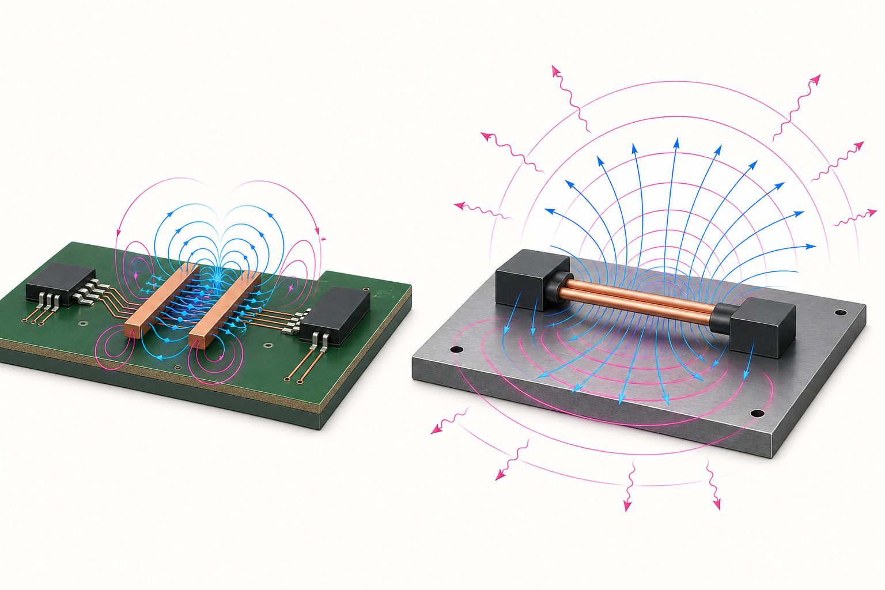
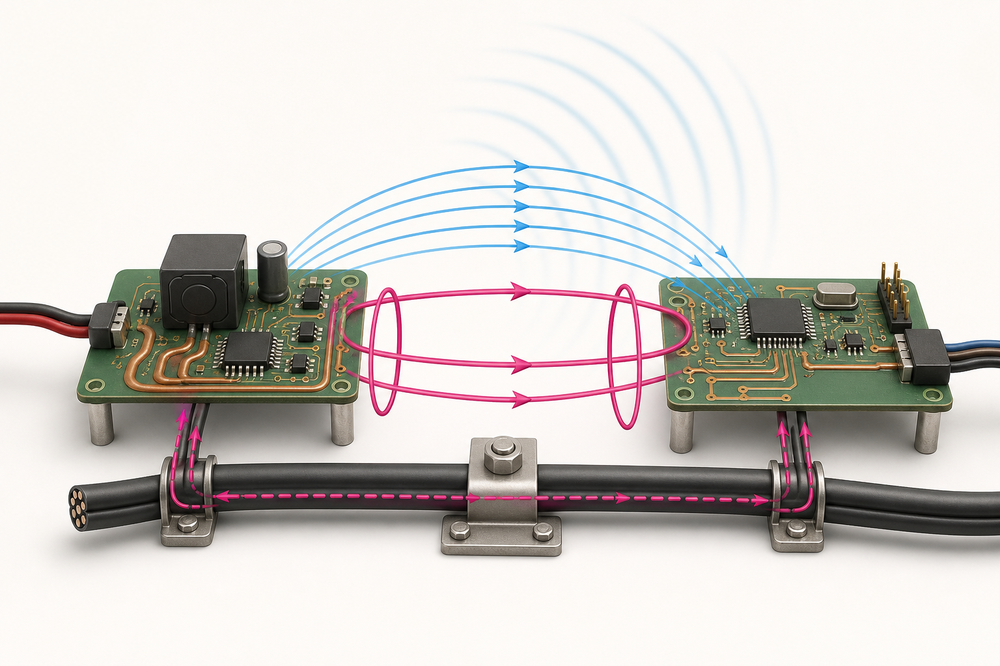

EMC 문제는 noise source, coupling path, susceptible victim 세 요소가 동시에
있을 때 생기며, 셋 중 하나를 충분히 약하게 만들면 해결된다.
EMI는 원치 않는 electromagnetic disturbance, EMC는 장비가 환경을 과도하게 방해하지 않으면서
그 환경에서도 의도대로 동작하는 능력이다. emission은 conducted와 radiated로, immunity는 ESD,
EFT/burst, surge, RF field, conducted RF 등으로 나뉜다. 규격 시험은 재현 가능한 setup에서
limit과 performance criterion을 확인하는 것이며 설계 단계의 pre-compliance와 연결된다.
coupling을 키우는 변화율
VL = M·di/dtinductive coupling
IC = Cm·dv/dtcapacitive coupling
VCM = (V++V−)/2common-mode voltage
VDM = V+−V−differential signal
differential current는 한 conductor로 나가 다른 conductor로 돌아 loop가 작으면 far-field가
잘 상쇄된다. 두 conductor가 같은 방향으로 움직이는 common-mode current는 cable과 chassis를
큰 antenna로 사용할 수 있어 아주 작은 양도 방사를 지배한다. imbalance, asymmetry, reference
discontinuity가 differential energy를 common mode로 변환한다.
LAB 12
Differential ↔ Common mode
pair imbalance가 생길 때 cable 외부의 순전류가 커지는 모습을 본다.
외부 순전류 작음방사 위험 낮음–중간
PLATE 12A
Differential cancellation과 common-mode radiation
같은 도체 수라도 전류의 상대 방향과 귀환 구조가 외부 장을 결정한다.

차동 pair의 두 전류가 크기와 경로에서 대칭이면 먼 곳의 장이 상쇄된다. connector pinout,
skew, plane 전환과 parasitic C의 불균형은 차동 에너지를 cable을 구동하는 common mode로 바꾼다.
PLATE 12B
Source–Path–Victim으로 문제를 분해한다
EMC 대책은 세 요소 중 가장 지배적인 항을 약하게 만드는 일이다.

source의 dv/dt·di/dt를 낮추고, mutual C·M 또는 공통 임피던스 경로를 줄이며, victim의
bandwidth·threshold·filtering을 조정한다. ferrite 하나보다 어느 경로를 끊는지 설명할 수 있어야 한다.
원리 더 깊게
작은 common-mode 전류가 큰 방사를 만드는 이유
작은 current loop의 magnetic dipole radiation은 대략 loop area와 frequency의 제곱에 민감하고,
짧은 전기 dipole은 conductor 길이와 current에 민감하다. PCB 내부의 차동 loop가 작아도 수십 cm
cable에 수 mA의 common-mode current가 흘러가면 cable 길이가 파장의 의미 있는 비율이 되는
주파수에서 훨씬 효율적인 antenna가 된다. 이 때문에 cable current를 µA–mA 단위로 줄이는 일이
board trace의 차동 전류를 조금 줄이는 것보다 효과적일 수 있다.
Source
clock harmonic, converter switch node, motor commutation, ESD처럼 큰 dv/dt·di/dt와 반복성을 찾는다.
Path
stray C, mutual L, shared impedance, aperture, cable과 shield termination 중 실제 폐회로를 그린다.
Victim
threshold, bandwidth, CMRR, protection clamp와 firmware recovery가 어떤 disturbance에 취약한지 본다.
검증
한 번에 한 경로만 바꾸고 harmonic, cable current, error rate가 같은 방향으로 움직이는지 확인한다.
filter는 noise를 “없애는” 부품이 아니라 주파수별 impedance를 바꿔 원하는 귀환 경로로 보내는
network다. capacitor를 놓을 때는 신호 쪽 pad뿐 아니라 return pad가 chassis/reference에
짧고 낮은 L로 닫히는지까지 설계한다.
손으로 푸는 예제 · 2 pF의 stray coupling
switch node가 10 V/ns로 변하고 chassis 또는 cable에 대한 stray capacitance가 2 pF라면
displacement current는 I = C·dv/dt = 2 pF×10 V/ns = 20 mA다. 수 pF는 작아 보여도 빠른 edge에서는
상당한 common-mode current를 만든다. switch-node copper area를 줄이고 shield/reference에 대한
return을 제어하며 gate slew를 조절하는 이유다.
상식 점검: capacitance나 dv/dt를 절반으로 만들면 coupled current도 절반이 된다.
PCB에서
connector 경계에서 filter와 TVS를 가까이 두고 noise가 board 안으로 들어온 뒤 우회하지 않게 한다.
common-mode choke는 differential signal을 덜 방해하면서 common-mode impedance를 높이지만
saturation, parasitic capacitance, mode conversion을 본다. shield는 360° low-impedance
termination이 중요하며 긴 pigtail은 high-frequency inductance를 만든다.
시험과 진단에서
spectrum analyzer와 near-field probe로 harmonic과 hotspot을 찾고, current probe로 cable
common-mode current를 비교한다. LISN은 power-port conducted emission 측정에 정의된 impedance와
coupling을 제공한다. 임시 copper tape, ferrite, absorber를 한 번에 하나씩 적용해 path 가설을
시험하되 최종 설계는 원인에 맞게 구조적으로 수정한다.
오개념 경보
“EMC는 설계가 끝난 뒤 ferrite와 shield로 통과시키는 시험 문제다.”
late fix는 비용이 크고 재현성이 낮다. stackup, connector pinout, return path, switch-node area,
enclosure seam과 cable termination은 layout 전부터 EMC를 결정한다. 인증 limit은 제품·port·환경에
따라 다르므로 적용 규격과 edition을 공식 기관·시험소와 확인한다.